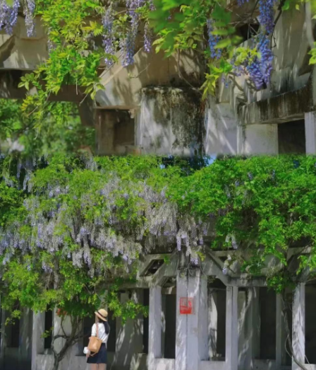

西安老公园

三代人的回忆！西安这座近50岁的老公园，竟然美成这样了！ 藏在纺织城的低调公园，是几代人的共同回忆。还记得小时候在这里滑旱冰，几个同学约着能玩一整天，没想到今年靠着紫藤瀑布出圈了！
纺织公园地方不大，建筑和设施都有些旧了，但这样的岁月感倒也十分出片，非常好拍📷！老公园总有种独特的气质，沉稳安静，反倒衬托出紫藤瀑布蓬勃的生命力！
🌟打卡攻略： 纺织公园东门进，往右手边走就能看到好几颗紫藤老树，目前紫藤花盛开，30米的紫藤廊道正是好看的时候。纺织城真的很好逛，附近还有很多地道美食，周末遛娃的话可以安排个“纺织城一日游”，附近还有机车公园（点击回顾👉就在东郊！西安这个免费主题公园，终于被发现了！）可以顺道打卡。
【纺织公园】 📍地址： 西安市灞桥区纺织城西街191号 （图文来源：新西安乱弹）